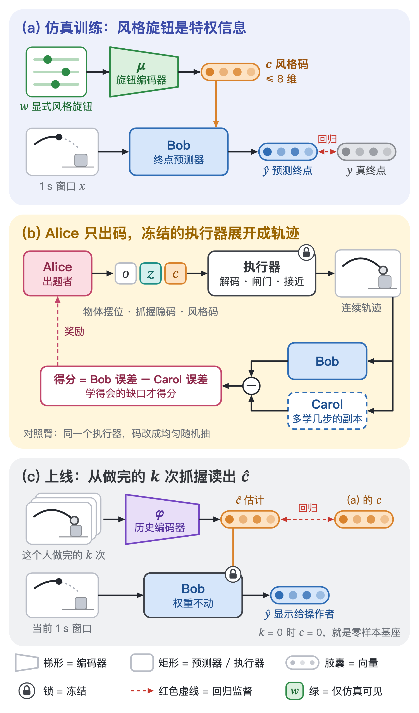

Alice / Bob + 隐码：具体计划
这条线回答一个问题：不用真人数据，怎样系统地找出预测器没覆盖到的人和抓法，再把它补上。做法是三件事：把一种抓法压成抓握隐码 z，把一个人的风格压成风格码 c，再让出题者 Alice 在这两个码里找 Bob 还不会、但学得会的地方。
本页是执行用的具体版本：证据、设计细节、闸门和步骤都在这里。只想看结论和要拍板的事，读 快速阅览。
§ 1四个问题的回答
Alice 只出码，连续轨迹由一个冻结的执行器从码展开。Alice 的动作是（物体与摆位 o，抓握隐码 z，风格码 c）。执行器先把 z 解成终点手形并过物理闸门，再按 c 对应的风格画出整段接近。Bob 吃到的仍然是完整的 1 s 窗口。详见 § 6。
主干先不换，加一场头部对比：MLP 残差、K 模混合头、flow matching、DDPM 四个臂。以前两次生成式对比（v1、v19）的结论都是“和 MLP 等价”，但那两次的数据里没有“同一个窗口、后面可能去两个终点”的情形。Alice 会把这种情形找出来，所以现在才是第一次能公平地比。详见 § 7。
先 latent，但只先做一个小闸门（P0）；只出终点的 Alice 第一层同时做。P0 问的是：把真实的风格旋钮直接告诉 Bob，1 s 提前量上的误差降不降。降，才值得做风格码；不降，风格只当扰动随机化，Alice 只在物体和抓法里搜。详见 § 8。
做得了前三档，第四档被数据卡住。把显式旋钮压成低维码（训练时编码、上线时从历史读出）现在就能做，不需要新数据。从真人运动里学风格做不了：盘上的 DexYCB 只有 1 个人。还要说清一点：这样得到的 latent 是同一组旋钮换了坐标，它不会让接近段更像人。详见 § 5。


§ 2这条线的位置
共享控制路线（Stage 1.x）问的是“怎么帮操作者把这一次抓握做成”。这条线问的是另一件事：模型在没见过的人、抓法和物体上还行不行，怎样系统地找出不行的地方并补上。所以它从主页单独出一张卡，编号用 MG-x。
| 项 | 内容 |
|---|---|
| 当前测试床 | Stage 1.2 的终点预测器（本页叫 Bob）：输入抬离前的 1 s 窗口，输出最终抓握的掌姿与手形，指标是厘米误差。模型与历史见 Stage 1.2 计划 和 结果。 |
| 以后可以挂进来的 | RL 操作线（机械臂 + L20 的抽屉、插孔任务）的任务泛化测试。那条线的结果在本页只当类比，没有一项被写成“在预测器上试过”。 |
| 硬约束 | 零真人样本（2026-10-11 定）：本项目录到的操作者数据不进入风格生成器。操作者 op01 的前 46 场只用来评测（先预测、后对答案），后 46 场封存，最后只读一次。 |
| 本页相对 11-10 计划稿新增的 | 隐式风格化的四档可行性（§ 5）、Alice 只出码的结论（§ 6）、Bob 头部对比（§ 7）、先后顺序（§ 8）。原计划稿在 human_machine_interaction · training/plan/2026-11-10-alice-bob-latent-three-lines-plan.md。 |
§ 3三个量
仓库里显式风格向量的变量名是 z，和抓握隐码撞名。本页统一改成下面的叫法。
| 符号 | 是什么 | 大小 | 谁产生 | 现状 |
|---|---|---|---|---|
| w | 显式风格旋钮：一个虚拟操作者的全部风格参数（速度、张开量、接近方向偏好、抓握类型偏好等） | 35 行，展开 113 维 | 层级采样器 | 已有 operator_style.py |
| c | 风格码：w 压出来的低维码，Bob 的一个额外输入。c = 0 就是现在的零样本基座 | ≤ 8 维（暂定） | 训练时由 μ(w) 给出；上线时从历史读出 | 未实现 |
| z | 抓握隐码：某个物体上的一种抓法（终点手形与掌姿），物体作条件 | 待定 | 物体条件 VAE，在 v3 抓握库上训练，训完冻结 | 未实现 |
| o | 物体与摆位 | — | 采样 | 已有 |
z 在输出一侧，管“去哪儿”；c 在输入一侧，管“这个人怎么去”。两个码互不替代。
§ 4已有证据
每一行都标了实验线。预测器线 指 Stage 1.2 的终点预测，指标是厘米；操作线 指 RL 操作策略，指标是成功率。跨线的结果只能当类比。
| 结果 | 实验线 | 状态 | 对本计划的含义 | 出处 |
|---|---|---|---|---|
| v1（2026-09-13）：flow matching 减 MLP 残差基线 M0 = +0.03 cm，95 % 区间 [−0.29, +0.34]。序列生成两臂里 flow matching 好于 DDPM（ADE 2.66 对 3.65 cm），两者都没赢 M0 | 预测器线 单方块 95 条 pinch，1 个操作者 | 跑过 | 单模数据上，生成式没有收益 | 结果页 v1 |
| v19（2026-10-08）：条件 flow matching 与 M0 按预登记规则等价。真人方块 52 条上 1 / 0.5 / 0 s 误差：M0 2.52 / 2.29 / 1.88，flow matching 取最近模 2.97 / 2.25 / 1.70 cm。两个抓握家族的模间距中位只有 2.5 cm；预测落在两族之间的比例为 0 | 预测器线 v2 库：5 个 YCB 物体 + 方块，529 个两指抓握 | 跑过 | “同一个位置两种抓法都可能”从没被构造出来。多模优势是没测，不是被否定 | 结果页 v19 |
| v10（2026-10-07）：把 DexYCB 的真人伸手运动接到生成的终点上。只用掌姿输入时 3.85 / 2.81 / 1.43 cm，公式运动 4.06 / 3.14 / 1.77。配对差只在抬离时刻成立（−0.34 [−0.49, −0.21]），1 s 前没有差别（+0.01 [−0.73, +0.46]） | 预测器线 1 个人的 46 条运动，2,145 条 trial | 跑过 | 真人运动迁移过来的是节奏，接近方向没迁移过来；在 1 s 提前量上没有收益 | 结果页 v10 |
| 11-01 风格线（v2 库，暂定结论）：把真实风格向量直接给 Bob，1 s 窗口的终点误差没有下降 | 预测器线 v2 库，只有 3 个正权重抓握类型 | 跑过 v3 库上没重跑 | 这正是 P0 闸门要在 v3 库上重新回答的问题 | human_machine_interaction · hand_control/plan/2026-11-01-grasp-types-style-implementation.md |
| v3 抓握库：3,562 行通过闸门，正权重抓握类型从 3 个增到 8 个 | 预测器线 数据资产 | 已生成 | z 的训练集。v2 时类型太少，抓握隐码没法公平地测 | 同上 |
| op01 诊断：分类器把合成和真人完全分开（AUC 1.00），主要靠接近时长（op01 约 2.2 s，合成约 0.9 s）和到位前的停顿。生成终点到 op01 真终点的中位距离 3.1–3.7 cm，2 cm 内覆盖率为 0 | 预测器线 诊断，只报不回灌 | 跑过 | 接近段最大的差距在时序。这是显式生成器的问题，换成 latent 不会变 | 同上 |
| DexYCB 在盘上只有 subject 01：100 条序列，其中 50 条右手 | 数据资产 | 已核对 | 人与人之间的风格差异没法从现有真人数据学 | human_machine_interaction · hand_control/plan/2026-10-07-dexycb-human-motion.md |
| 抓取放置任务上的隐码试点（2026-11-08）：冻结的物体形状码表臂在没见过的物体类别上成功率 83.1 %，基线臂 94.2 %；没见过的类别读出的码落在码表的分布之外，任务本身已接近饱和 | 操作线 RL 策略，成功率 | 跑过 不是这个任务；数字取自项目备忘，本页没有重新核对 | 只能当类比：提示码表对分布外的输入外推差。不能说“码表在预测器上试过” | — |
| 抓握隐码、风格码、Alice / Bob | 预测器线 | 从没跑过 | 本页全部是设计 | — |
§ 5隐式风格化能做到哪一档
| 档 | 做法 | 要不要新数据 | 结论 |
|---|---|---|---|
| L0 显式 | 113 维旋钮 w，层级采样出虚拟操作者，带风格的接近生成器画轨迹 | 不要 | 已有 在 v2 库上跑过 |
| L1 压成码 | 旋钮编码器 μ(w) → c，和 Bob 一起训练；上线用历史编码器或闭式更新读出 c | 不要 | 现在能做 |
| L2 可解回的低维风格 | 在 w 里找出真正影响 Bob 的少数几个方向 U，令 w = w̄ + U c。Alice 直接在 c 里搜，再解回旋钮 | 不要 | 现在能做 |
| L3 从真人运动学风格 | 分层的轨迹解码器：接近段由物体、终点、“这个人的码”和单次噪声共同决定 | 要：多个人的伸手抓取 | 卡在数据 盘上只有 1 个人 |
L2 怎么做
- 用现成的
sample_population抽 N 个虚拟操作者，每人生成一批 trial。 - 每人算两样东西：Bob 看到的窗口的统计量，和这个人最后选中的终点。
- 做降秩回归：标准化后的 w 里，哪几个方向一动，这两样东西就跟着动。取影响最大的前 r 个方向记成 U，r ≤ 8。
- 风格码是 w 在这几个方向上的坐标；解回旋钮用 w = w̄ + U c，再走现成的
destandardise并做范围检查。
副产品是影响力的谱。前几个方向占掉大部分，说明几维就够；谱整体很小，说明风格几乎不改变 Bob 看到的东西，那就不需要风格码。
不直接用自编码器压 w 的原因：自编码器会忠实保留所有旋钮，包括对预测毫无影响的那些。这里要的是按对预测的影响排序。生成器不可微，所以用总体回归，不用雅可比。
L1 怎么做：两种读法并列比
| 读法 | 训练 | 上线 | 现有代码 |
|---|---|---|---|
| 编码器 | 先用 μ(w) 得到 c 并和 Bob 联合训练；再训练历史编码器 φ，让它从做完的 k 次抓握回归出 c；最后联合微调 | 前向一次得到 ĉ | 要新写 |
| 线性头 + 闭式更新 | 让 Bob 的最后一层对 c 是线性的：$y = f(x) + W(x)\,c$。W 是从虚拟人群里学到的风格基 | 冻结 Bob，只解 c：岭回归或贝叶斯线性回归，顺带给出不确定度 | 闭式更新 blr_update 已有 |
怎么确认 c 装的是风格，而不是别的：四个读数。
- 线性探针。c 能不能线性地读回真实旋钮。
- 换人对照。把别人的 c 给这个人用，误差应当变差。
- 学习曲线。k = 0、1、2、5、10 次时误差应当逐步下降，k = 0 时不比基座差。
- 四臂对比。无码、真实旋钮、编码器读出的码、闭式更新读出的码。
L3 为什么现在做不了
从 DexYCB 到 L20 的导入管线是有的（v10 用过），但 ~/Datasets/dexycb 里只解出了 subject 01。一个人学不出“人与人之间”的码。要做有两条路，都需要你点头：
- 下载 DexYCB 另外 9 个 subject，原始数据约 9 × 12 GB。
- 注册 GRAB 和 MANO 后下载 GRAB。
预期收益也要压低：v10 显示单人真人运动在 1 s 提前量上没有带来改善，而且那个人的接近方向和我们的操作者不同。所以 L3 不在 MG-0 到 MG-2 的路径上。
现有技术清单
| 需要的东西 | 现状 | 位置（human_machine_interaction 仓库） |
|---|---|---|
| 显式风格合同、层级采样、标准化 | 有 | common_tool/level_1_universal_tool/contracts/operator_style.py |
| 带风格的接近生成器 | 有 | training/stage12_intent/services/level_1_dataset/synthetic_approach_styled.py |
| 虚拟人群数据集 | 有 v2 库上跑过，换源到 v3 即可 | …/level_3_experiment/style_population.py、…/level_1_dataset/style_bank_view.py |
| 抓握物理闸门 | 有 | …/level_1_dataset/grasp_gate_v3.py |
| flow matching 与 DDPM 的训练、采样 | 有 | …/level_2_models/flow_matching.py |
| 在线仲裁（只有赢过基座才生效） | 有 | …/level_2_models/ol_adapters.py 的 NeverWorse |
| 旋钮编码器、历史编码器、风格基 U、抓握 VAE、Alice 采样器、Carol 评分、K 模混合头 | 没有 要新写 | — |
| 多个人的真人接近数据 | 没有 | — |
§ 6Alice 出什么
| 方案 | Alice 的输出 | 好处 | 问题 |
|---|---|---|---|
| A · 只出终点 | 物体摆位和最终抓握，不管接近段 | 最简单，不需要 Bob 就能自检 | Bob 的输入是 1 s 窗口，没有接近段就训不了 Bob。只适合做第一层自检 |
| B · 出码，执行器展开（推荐） | (o, z, c) | 终点的物理合法性由闸门保证；接近段由 c 对应的风格先验约束；搜索空间只有十几维 | 接近段的真实度仍然取决于显式生成器 |
| C · 直接出原始轨迹 | 每一帧的掌姿和手指 | 表达力最强 | 零真人样本下没有“像人”的锚。Alice 会找到物理上可行、但没人会这么做的轨迹，Bob 学了也没用 |
方案 B 里的执行器是冻结的，由四段现成或待写的部件串成：抓握解码器（z → 终点，待写）、物理闸门（已有）、c → w 的解码（L2，待写）、带风格的接近生成器（已有）。v10 移植真人运动时用过的净空检查（指令路径扫过物体超过 5 mm 或桌面超过 3 mm 的丢掉）可以原样接在执行器后面。
三层，一层一层开
| 层 | 做什么 | 需要 Bob 吗 | 看什么 |
|---|---|---|---|
| 第 1 层 · 只出终点 | 从 z 的先验采样、在两个库内抓握之间插值 | 不需要 | 过闸门的比例；到最近库内抓握的距离；op01 真终点到最近生成终点的距离（现状 3.1–3.7 cm，只报不回灌） |
| 第 2 层 · 随机搜 | 按先验随机抽码，留下高分的；再在高分点附近扰动 (z, c) | 需要 | 同样的样本预算下，是否赢过均匀随机 |
| 第 3 层 · 学出来的出题者 | 训练一个提议网络 | 需要 | 只有第 2 层赢了才做 |
得分：不能只刁难 Bob
得分 = Bob 的误差 − Carol 的误差。Carol 是 Bob 的副本，在这一批题的一半上多学几步，在另一半上测。
- Bob 已经会的题：两者误差都小，得 0 分。
- 谁也学不会的题（纯歧义、纯噪声）：两者误差都大，得 0 分。
- Bob 不会、Carol 学几步就会的题：得正分。这才是“没覆盖到、但能补上”的地方。
§ 7Bob 的头部对比
Alice 的目标之一就是找出这种状态：同一个 1 s 窗口，后面可能去两个不同的终点。均方误差回归在这里会预测到两个终点中间，误差降不下去。这是生成式头可能有用的唯一情形，而 v1 和 v19 的数据里都没有它。
有两层应对。第一层已经在得分里：纯歧义的题 Carol 也学不会，Alice 拿不到分。第二层是下面这场对比。
| 臂 | 头 | 显示给操作者的那一个预测 | 现有代码 |
|---|---|---|---|
| A0 | MLP 残差（现行） | 直接输出 | 有 mlp.py |
| A1 | MLP + K 模混合头：K 个终点加各自的概率 | 概率最大的模 | 要写 改动小 |
| B1 | 条件 flow matching | 采 16 个，取离当前手掌最近的模（沿用 v19） | 有 train_fm / sample_fm |
| B2 | DDPM 的 ε 预测 + DDIM 采样（Diffusion Policy 的目标） | 同 B1 | 有 train_ddpm / sample_ddpm；终点臂没跑过，v1 只跑过序列臂 |
| 可选 | 序列版：生成未来 1 s 的 20 步 | 序列末端 | 有 v1 的 FMS / DPS |
四个臂用同一个主干、同一份输入、同一份训练集、同样的种子数。序列版只在终点臂显示出差别以后再加。
测试集分两层
- 歧义子集。构造法：同一个虚拟操作者、同一个物体摆位、同一个起点，配两个不同的终点（不同的 z），取两条轨迹还没分开的那段窗口。检索法作核对：在训练集里找输入最近的几个窗口，它们的终点彼此相距超过阈值（暂定 3 cm）。
- 非歧义子集。其余窗口。
两个子集分开报，不合并成一个均值。
指标与判据
| 指标 | 回答什么 |
|---|---|
| 单个显示预测的掌心误差，1.0 / 0.5 / 0 s | 操作者实际看到的那个预测准不准；和历史版本可比 |
| K 个里最好的那个（oracle 模） | 头有没有把对的模生成出来 |
| 2 cm 内的模覆盖率 | 真实的几个终点各自有没有被覆盖 |
| 概率校准 | 头给的概率或离散度信不信得过 |
| 落在两模之间的比例、穿模率 | 有没有预测出物理上不成立的中间值 |
| 20 Hz 下的推理耗时 | 上线跑不跑得动 |
判据（暂定）：非歧义子集上不退步，沿用 v19 写过的 +0.2 cm 线；歧义子集上单个显示预测有区间不跨零的改善。两条都满足才换头，否则保留 A0，把结果记下来。
§ 8先后顺序
先 latent，但只先过一个小闸门；Alice 第 1 层同时做。
- P0（在 v3 库上）。两个主臂：Bob 不带码；Bob 直接拿到真实旋钮。另加一个常数偏移对照，排除“多一个输入就变好”。看留出操作者上 1 s 处的误差。真实旋钮臂比无码臂低 0.3 cm 以上（暂定），才算风格对 Bob 有用。
- P0 通过 → 做 L2 的风格基和 L1 的两种读法 → Alice 在 (o, z, c) 里搜。
- P0 不通过 → 风格只当扰动随机化，不做风格码；Alice 只在 (o, z) 里搜；先查哪根风格轴没有改变“同一窗口 → 不同终点”的映射，把精力转到接近生成器上。
- Alice 第 1 层只测 z 的覆盖，不依赖风格，不等 P0。
不先做 Alice 的原因：没有 c，Alice 只能直接拧 113 个旋钮，搜索空间大，而且多数方向对 Bob 没有影响。不把 latent 做大再碰 Alice 的原因：v2 库上已经出现过一次“真实风格没有帮助”，先花一周做编码器可能白做。
§ 9步骤与闸门
阈值都是暂定值。状态栏只有真的跑过才会改。
| 步 | 做什么 | 闸门（暂定） | 状态 |
|---|---|---|---|
| MG-0a | 评测脚本：合成的留出操作者、op01 前 46 场按时间顺序回放、歧义子集划分、§ 7 的全部指标 | 能复现现有基座的数字 | 待执行 |
| MG-0b | 在 v3 库上重建虚拟人群；P0 的两臂加一个常数偏移对照 | 真实旋钮臂 ≤ 无码臂 − 0.3 cm（留出操作者，1 s） | 待执行 |
| MG-0c | 训练抓握 VAE；Alice 第 1 层 | 先验采样与插值过闸门的比例 ≥ 库内抓握重验通过率 × 0.8 | 待执行 |
| MG-1a | 风格码：L2 的风格基，L1 的两种读法，四个读数 | k = 0 不差于基座；留出操作者 k = 5 时 ≤ −0.3 cm；换人对照变差 | 待执行 |
| MG-1b | Alice 第 2 层跑 3 轮，加均匀随机对照 | 同样预算下 Alice 臂的误差低于对照臂 | 待执行 |
| MG-1c | Bob 头部对比：A0 / A1 / B1 / B2 | § 7 的两条判据 | 待执行 |
| MG-2 | 合并：胜出的读码方式 + Alice 生成的人群，重训 Bob；测训练范围之外的风格；画 k 对误差的曲线 | 四臂对比；范围外风格不崩 | 待执行 |
| MG-3 | 上线拼接的离线回放：零样本、码适应、权重级在线学习三路输出，按最近几次的误差仲裁；k ≥ 5 后码还没赢基座，就升级到权重级在线学习 | 任何时刻不比现行基座差 | 待执行 |
| MG-4 | op01 后 46 场只读一次 | 只报数 | 待执行 |
当前一步：MG-0
- 写评测脚本，先在现成的模型上复现已有数字。
- 把
BankView的数据源换成 v3 库，重新生成虚拟人群（先 50 人 × 3 个种子）。 - 训练 P0 的各臂，报留出操作者 1 s 处的配对差和区间。
- 训练抓握 VAE，报先验采样与插值的闸门通过率。
- 把结果写成一页记录，再决定 MG-1 怎么走。
粗估（估计，不是承诺）：MG-0 两到三天，MG-1 约一周，MG-2 两到三天。训练都是小 MLP，人群生成是 CPU 活，不需要头显，也不需要新录数据。
代码落点：采样器进 training/stage12_intent/services/level_1_dataset/，编码器、风格基和码更新进 level_2_models/，实验入口进 level_3_experiment/。
§ 10风险
- P0 不通过。v2 库上已经出现过一次。退路在 § 8 第 3 条。
- latent 只是换坐标。接近段的真实度不会因此变好。
- op01 只有一个人。真人上只能说“对这个人有效”，跨人的结论只来自合成的留出操作者。
- op01 目前在合成人群之外。2 cm 覆盖率为 0。码适应可能在合成上好看、在真人上无效；MG-3 的仲裁和升级就是为这个留的。
- 在 op01 前 46 场上反复选模型也是一种泄漏。所以后 46 场封存到最后。
- Alice 找到的全是歧义。由 Carol 项和头部对比两层应对。
- Alice 赢不了均匀随机。停线，保留随机化。
- 闸门通过不等于人会这么抓。抓握库是合成的，闸门只管物理上成立。
§ 11待你定
| # | 事项 | 我的默认 |
|---|---|---|
| 1 | 是否开始 MG-0 | 开始。不用头显，不用新数据 |
| 2 | 是否为 L3 下载 DexYCB 另外 9 个 subject（约 9 × 12 GB），或注册 GRAB | 先不下。它不挡 MG-0 到 MG-2 |
| 3 | 是否放宽接近时长的先验 | 可以放宽，但只按文献或对称放宽来定，不照 op01 的数调 |
| 4 | 头部对比是否包含序列版 | 先不含，终点臂出现差别再加 |
| 5 | 三个暂定值：c 的维数上限 8、P0 阈值 0.3 cm、歧义阈值 3 cm | 先用这些 |
| 6 | 11-10 计划稿 § 7 的七个默认值（零真人口径、z 只编码终点、z 先平铺等） | 沿用 |